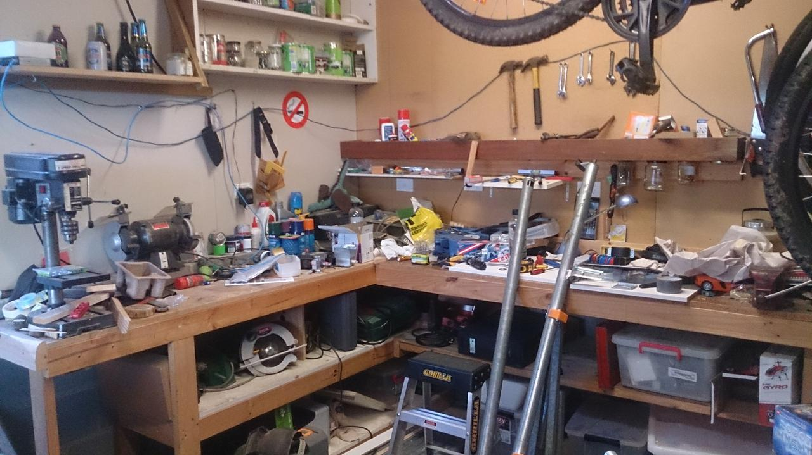

Organising my digital stuff
I started to write about my ${HOME} directory structure in my post about /home filesystem choices but then it got terribly long and complicated. So I'm writing about it here.
Since switching to a new computer at work I have been reviewing my hodge-podge of directories that I moved from my old work laptop. Same as with my emacs configuration, I like my ${HOME} to be familiar and friendly no matter what computer and operating system I'm using. Also like emacs at the beginning of this year, it's presently a mess. So I'm documenting how I'd like it to look, be that on my home Linux computer, the Windows mode of the same, or on my work's Macintosh.
This long and detailed article is for my own purpose. Others MAY find it frightfully dull and of little value.
Okay, so you're still here despite the warning, and you're probably thinking "Mike, you've been using computers since the 1980s, and Unix systems since the early 1990s, but you're just now blogging about how to organise your home directory! In 2016?! I mean, come on!"
Yep.
I think, like most people, I invented a very simple structure, almost with no thought, and it kind of grew un-tended over the decades.
Later as I moved from DOS to Unix (wow long names!), to Windows (short names … and then long ones again), then Linux and now also macOS… each environment has added its own pieces to the pie….
So my ${HOME} has an accumulation of crufty files, and weird directories, with no particular place for anything, and files/folders left lying around wherever they were last used.
To get a feel for the state of this mess, take a look at my real-life work bench, which reflects my computer work benches a little too closely:

(I know, right…?)
I've put some time on the bus to good use, and cleared up my work laptop's ${HOME} quite a bit. I've also put a bit of thought into what directories to have, and their purpose.
Overview of my Home directory
There are only three kinds of things in my ${HOME}:
- configuration files/directories (or "dotfiles") — usually hidden
- directories with names that start with a capital letter
- three-letter-named stubs
I'll describe all these things in a bit, but let's first see how it looks.
Here's my new, squeaky clean ${HOME} directory on my work's Macintosh:
mjl@milo:~$ ls -F /Users/mjl Applications/ Links/ Uploads/ doc@ org@ Audio/ Maildir/ Video/ fun@ pix@ Desktop/ Movies/ Work/ hax@ pub@ Documents/ Music/ bak/ key@ tmp/ Downloads/ Pictures/ bin/ lib/ vid@ Grid/ Projects/ buz@ mem/ vms/ Library/ Public/ dev@ net@
My home PC should be almost the same, except the Mac things will be missing, and some of the 3-letter-stubs swap between links and true directories (because of different storage volumes):
mjl@tesla:~$ ls -F /home/mjl Audio/ Links/ Uploads/ dev@ lib/ pub@ Desktop/ Movies/ Video/ doc@ mem@ tmp@ Documents/ Music/ bak/ fun@ net@ vid@ Downloads/ Pictures/ bin/ hax@ org@ vms@ Grid/ Projects/ buz@ key@ pix@ web@
Here's how %USERPROFILE% SHOULD look in Windows: (fewer stubs - depending on the Windows version, I use either mklink or junction to make the 3-letter-stubs, and I move OneDrive within Grid if it's present):
PS C:\Users\mjl> dir | format-wide -column 5
Directory: C:\Users\mjl
bak bin Contacts Desktop doc
Documents Downloads Favorites fun Grid
hax key lib Links Music
net org Pictures pix Projects
Saved Games Searches tmp Uploads Videos
Now I'll explore these directories and what they contain, by category.
Directories with Long Names starting with a Capital Letter
These are the familiar ones you see in the Users folders of Windows and macOS, placed there by the makers of the operating system (i.e. by Apple/Microsoft, or by Linux desktop environments that follow similar convention). Interestingly in the case of Linux/X11 desktops, the Free Desktop Project does not prescribe these things. Rather they seem to be a loose convention, although the KDE Documentation mentions where to change the defaults.
The names of these directories all start with a capital letter and are spelled out in full, not abbreviated.
I used to replace these with symlinks, but that's actually a big hassle when you set up a new home directory. Generally it's more trouble to (re)move them than to leave them there, so that's what I'll now do: they are all genuine directories, not links to elsewhere (though they may contain links).
"Standard" directories
Most modern systems come with half a dozen pre-made directories in their user areas. Here's how I use them:
-
Desktop: This directory contains the files shown on a traditional GUI desktop. On a Mac it is shared by all the "Spaces"/virtual desktops. On KDE the desktop could be set to show anything else, so I use it less there -
Documents: general location for "documents". It SHOULD NOT contain any files, only symlinks to theDocumentsdirectory in other locations. e.g.Documents/net -> ~/net/DocumentsorDocuments/work -> ~/Work/Documents. In general I dislike this approach of grouping files by kind: better to group files by project/task -
Downloads: default download location of web browsers. It should get periodically cleaned… -
Movies: Not used a lot. I reserve this for motion pictures, as distinct from video in general. Some applications save here by default -
Music: for music (as distinct from audio, which is not music). Could contain a link to a shared library on some other volume -
Pictures: general picture files (pixels: still images, fractals, photographs, wall paper…). Generated images from Projects usually go with the project
Apple Macintosh additions
-
Applications: locally/personally installed macOS applications (so that one may install macOS app's without needing root access). This is akin to~/binI guess, but for the Apple/NeXT style.appBundles. I generally install applications system-wide, even if I'm the only user of a computer -
Library: (hidden in Finder) macOS application settings (like the hidden${XDG_CONFIG_HOME}directory on Linux, or%USERPROFILE%\AppDataon Windows - but Windows also stores some of these things in its Registry) -
Public: macOS lets you share files with other Macs on your local network by placing them in here (if the feature is turned on)
Microsoft Windows additions
So many more things added:
-
Contacts: Microsoft's Windows Contacts address book. Unused -
Favorites: Web browser bookmarks (IE and Edge). Unused -
OneDrive: Microsoft's grid drive. Unused, but it's relatively painless to move this (you just unlink the directory from OneDrive, move the directory, and re-link; same as you would for other services like this), so I move it underGridwith the others -
Saved Games: This is where Microsoft would like games to put their saves, I think. Generally unused. Most Microsoft games use it, but as a rule games will save wherever the heck they like (some even add keys to the Windows Registry) -
Searches: Windows Saved Searches. Unused
Two of the Microsoft standard directories are actually useful to me:
-
Links: GUI Shortcuts. This was a Windows 10 addition (previously this was only found underFavorites\Links. Now it's in both places). I use KDE/Free Desktop.desktopfiles quite a bit; it's nice to have one place to put them -
Videos: Video files. It's like the "standard"Moviesbut with a bit better name. I drop thesmyself… Audio and Video, rather than Audios / Videos
openSUSE additions:
-
public_html: this is a SUSE thing to automatically serve users' web pages with Apache I think. I remove it and replace it with a link:web -> /data/srv/www/${USER}/and configure Apache to serve from there instead of home directories.
My "general" directories
In principle I don't like dumping files into general buckets in home
- It makes it hard to find files
- Sometimes home is small (e.g. it must be on
C:drive in Windows, unless you want to fiddle a lot) - Files usually belong together in folders for a project, not scattered haphazardly
But in practice I do dump files quite a bit. So I should have obvious places for files that are more general, or not part of some project.
-
Audio: sounds (as distinct from music) -
Grid: (from Tron) "cloud"-synchronised directories are in here (Dropbox, Google Drive, MEGA, etc.) I don't like the term "cloud", so I called it "Grid" -
Links: (from Windows) for desktop shortcuts to other places.Links/browsersSHOULD contain launchers for different web browsers, to be linked to a Dock or Plasma panel -
Maildir: (from Unix, deprecated: I use Web Mail now): local copy of email, in maildir format. Used by emacs mu4e to view old emails -
Projects: the base for project directories (many will begit/hgrepositories) -
Uploads: (goes with Downloads) general staging area for files to be uploaded (i.e. to servers, or Raspberry Pi). Shared with some VirtualBox machines. As withDownloads, this should be periodically cleaned out -
Video: video files (not movies, e.g. generated animations and such) -
Work: (from AmigaOS) work-related directory structure
The distinction between Audio and Music; or Video and Movies deserves some clarification. My Audio/Video directories are intended for files that are not a song or a movie. In general, songs and movies don't belong in my ${HOME} anyway: they should be in a shared library location.
Grid volumes:
Locally stored files synchronised on the Grid ("to the Cloud"… ugh). Each may, or may not, be present, depending on the computer or the operating system. I put them all within ${HOME}/Grid:
DropboxMEGAGoogle Drive-
OneDrive(I don't use it, but I'll move it on Windows 10+)
While I use many services, only one is my main grid volume, and that is pointed to by the ${HOME}/net stub
3-letter "stubs"
These are short-named directories that are quick to type and more friendly to my geek sensibilities. They come from the days of old, when 8.3 letter filenames were the limit. Some are inspired by Unix, others are my own invention. They are all well-worn, familiar little pebbles in my life now….
-
bak: backups (e.g. emacs can be set to automatically put its twiddle-files here) -
bin: binaries (small programs/scripts) -
buz -> Audio/buz/: system sounds and other effects. -
fun -> net/fun: games and/or game saves (e.g. Minecraft), sync'd on the Grid -
key -> net/private/keys/: encryption key files (gpg, ssh and so on), sync'd on the Grid -
lib: code library (private code modules, or includes; Python virtual environments, ruby/go/whatever runtimes) -
org -> net/org/: organiser files (Emacs Org Mode)
The following stubs go to other devices on the system:
-
dev -> /run/media/${USER}/mounted removable devices (on a Macbook:dev -> /Volumes/) -
mem -> /data/mem/${USER}/: fast, solid-state storage (on a Macbook, it's all fast SSD, but leave the stub here) -
net -> Grid/MEGA/: my main grid drive (currently it's MEGA, but it could change one day…) -
pub -> /data/pub/: public files shared on this computer (on a Macbook:pub -> Public/) -
tmp -> mem/tmp/: temporary files use fast storage, should be emptied upon logout (just another directory on a Macbook) -
vms -> /data/vms/virtual machine storage (again, just another directory on a Macbook)
It'd be realy nice if there was such a thing as ~/etc for personal settings, but alas there is not. On Linux $XDG_CONFIG_HOME=${HOME}/.config, already, plus not all programs use this variable anyway, they just stuff their things into ${HOME}/.whatever. I could configure and move stuff, but it's more hassle than it's worth. What I am thinking of doing though, is to place dotfile collections that I have in version control into an etc stub, then linking from there back to ${HOME}. I'm still considering this….
There are also stubs used as short names for the long-named directories:
doc -> Documents/hax -> Projects/pix -> Pictures/vid -> Video/
I have noticed that this mixture of old-world names in my ${HOME} with the new-world ones is nicely mirrored in Apple's arrangement of the root directory of macOS:
mjl@milo:~$ ls -F / Applications/ Users/ dev/ opt/ usr/ Library/ Volumes/ etc@ private/ var@ Network/ bin/ home/ sbin/ System/ cores/ net/ tmp@ mjl@milo:~$
So I feel that I'm in good company with my new design.
Documents, Projects, Work, Oh My
"Where's that Work Document about my expense claims?". Well, it should be under Work/Documents, but it's reasonable that I might also look in Documents/work, so … "Why Not Both?"
These links line up so that you can find the same place by either path (the target of the link is where the files really belong):
-
~/Audio/net -> ~/net/Audio/: audio on the Grid -
~/Documents/net -> ~/net/Documents/: documents on the Grid -
~/Music/pub -> ~/pub/Music/: public/shared music -
~/Pictures/net -> ~/net/Pictures/: pictures on the Grid -
~/Pictures/pub -> ~/pub/Pictures/: public/shared pictures -
~/Projects/net -> ~/net/Projects/: projects on the Grid -
~/Video/net -> ~/net/Video/: video on the Grid -
~/Video/pub -> ~/pub/Video/: public/shared video
For work, things are a little more intricate (but any of these locations in the chain is equivalent):
~/Documents/work -> ~/Work/Documents -> ~/Grid/Squiz Drive/Documents/~/Projects/work -> ~/Work/Projects -> ~/Grid/Squiz Drive/Projects-
~/Work/net -> ~/Grid/Squiz Drive/(my personal work grid drive) -
~/Work/squiz -> /Volumes/squiz/(company-wide file share)
And that, I belive, is how things should stay now. Well, for another decade or so anyway… ;-)
The next thing to do is write some bash/powershell scripts to build a fresh home on new computers, using this blog post as a specification.